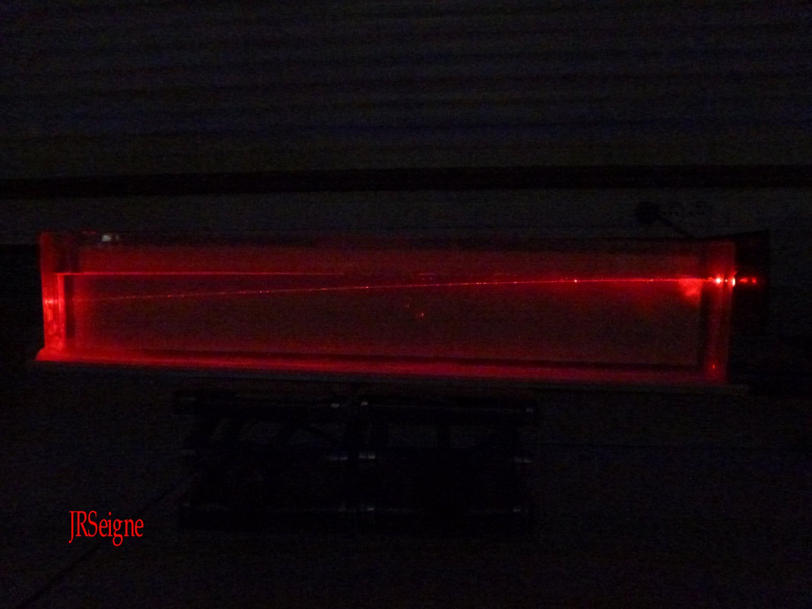
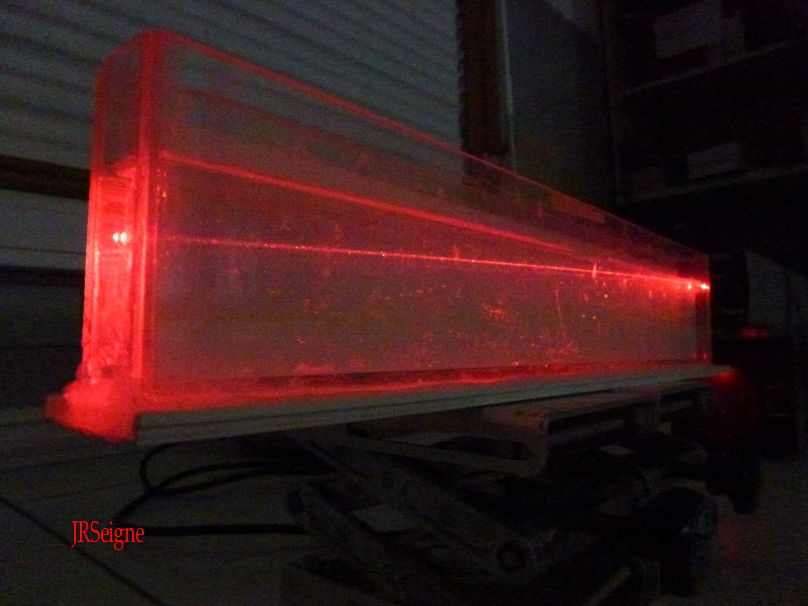
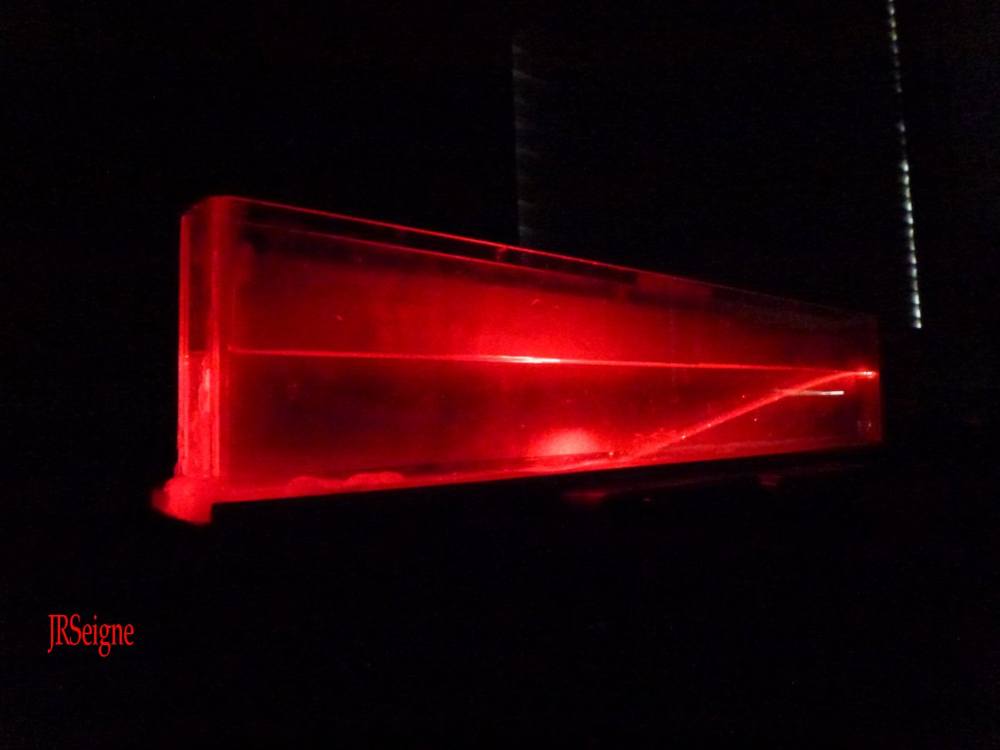
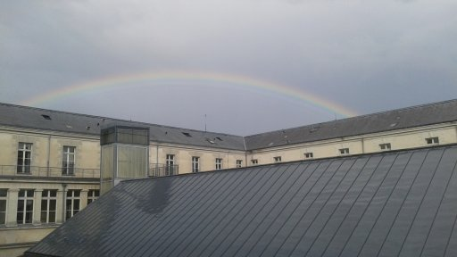
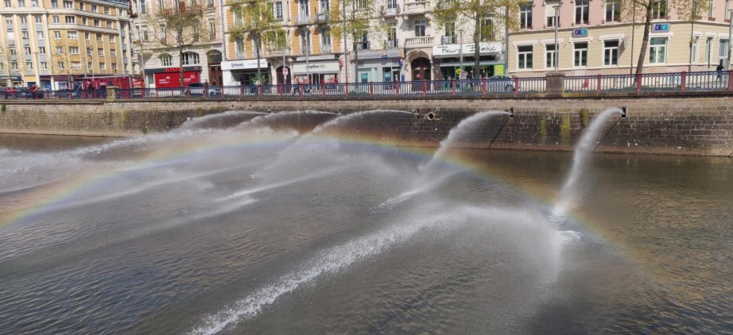
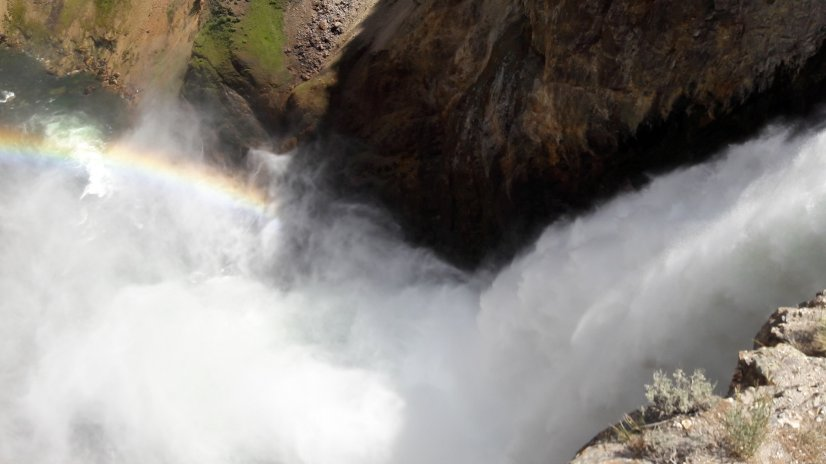
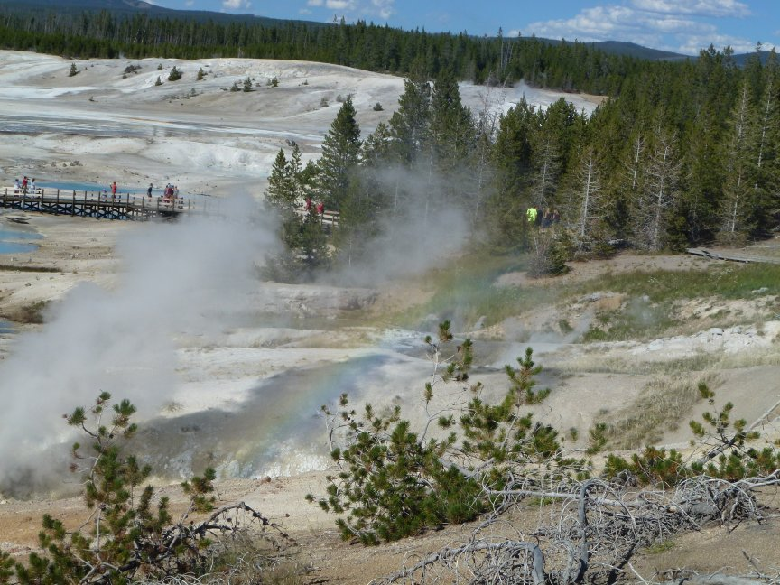
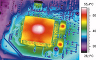
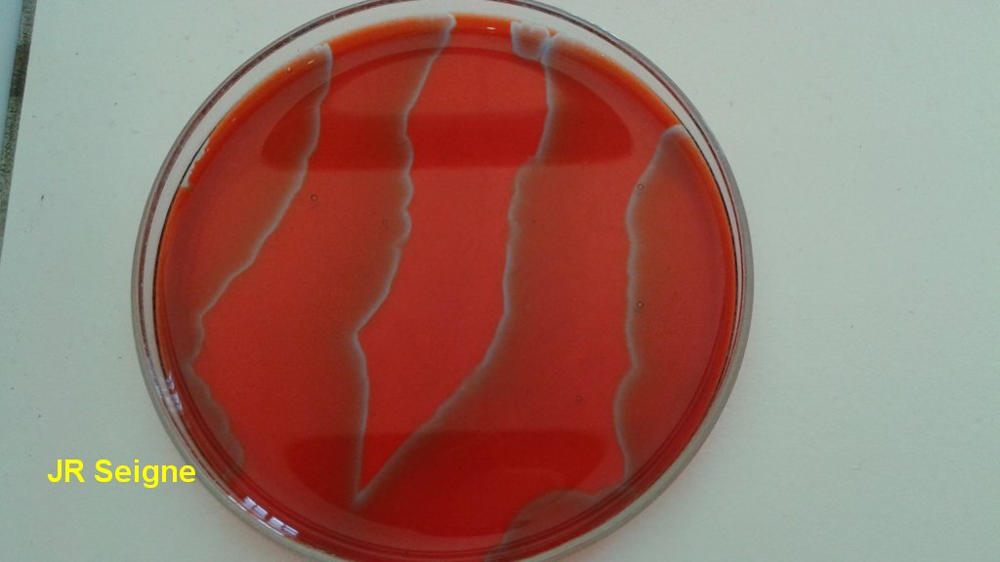
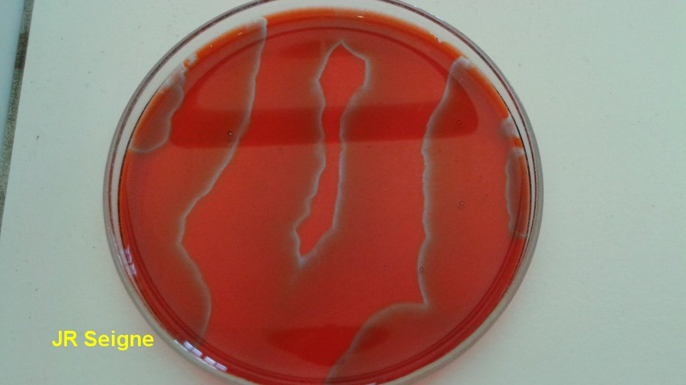

phpMyVisites | Open source web analytics

Sciences Physiques en MP*, Lycée Clemenceau Nantes |
|  |
La lumière se propage en ligne droite lorsque le milieu de propagation est homogène. C'est le cas dans les milieux où l'indice de réfraction est uniforme et indépendant du temps. Dans le cas d'un milieu où l'indice varie, on parle alors de milieu à gradient d'indice. Dans ce type de milieu, la trajectoire peut être beaucoup plus complexe. Le laser représente assez bien la notion de rayon lumineux. Ici, il se propage dans de l'eau salée saturée en chlorure de sodium à la surface de laquelle on a rajouté un peu d'eau douce. On peut voir très clairement la courbure du faisceau laser. |  |
 |
Cette seconde série de photographies montre la propagation du rayon laser dans un milieu où l'indice varie beaucoup plus que dans le premier cas. L'indice de réfraction de l'eau salée varie beaucoup plus rapidement du haut vers le bas de la cuve en plexiglass utilisée pour cette seconde expérience. Le laser ne traverse même plus la totalité de la cuve, on peut voir le lieu où il se réfléchit et il se réfracte vers le milieu de la cuve. |  |
|  | |||
|  |  |  |
| Les corps
dont la température se
situe au voisinage des températures habituelles obtenues sur Terre
émettent un rayonnement infrarouge. Ce dernier dépend fortement de la
température aussi bien pour sa composition spectrale que pour son
intensité. En utilisant une caméra sensible dans l'infrarouge, on peut
établir une cartographie des températures. Dans le circuit électronique
présenté ci-contre, on n'est pas surpris de voir que des températures
élevées sont obtenues au niveau du micropresseur. Les
ordinateurs puissants nécessitent des systèmes de
refroidissement
sophistiqués. |
 |
|  |
Sur ces photographies, on
peut
voir comme des vagues se propager dans la petite épaisseur de solution
versée dans une boîte de Pétri. Les zones bleues et rouges traduisent
des zones réductrices et oxydantes grâce à un indicateur coloré rédox.
Si l'on se place en lieu donné, on assiste à des oscillations du
potentiel rédox. On a affaire à des réactions oscillantes entretenues
tant qu'un réactif participant au système réactionnel est présent. On
peut facilement observer le phénomène pendant une heure. Ce type de
situation illustre la complexité que peut atteindre un système
réactionnel dont le fonctionnement est régi à la fois par des
considérations thermodynamique, cinétique et physique à travers les
probèmes liés à la diffusion. |
 |
| Diaporamas | TD | Devoirs | TP | Oral | Etudiants MP* | Etudes documentaires |
Anciens | Accueil |